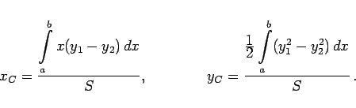

Inhalt Index DeskTop Bronstein

 Integralrechnung Bestimmte Integrale Anwendungen bestimmter Integrale Anwendungen in Mechanik und Physik
Integralrechnung Bestimmte Integrale Anwendungen bestimmter Integrale Anwendungen in Mechanik und Physik


Der Schwerpunkt C des Bogenstückes einer homogenen ebenen Kurve y = f(x) im Intervall [a,b] mit der Länge L (s. Abbildung) unter Berücksichtigung von (8.60a):
| (8.70) |
Der Schwerpunkt C einer geschlossenen Kurve (s. Abbildung) mit den Gleichungen y1 = f1(x) für den oberen und y2 = f2(x) für den unteren Kurventeil und der Gesamtlänge L ergibt sich zu:
| xC = |  |
||
| yC = | (8.71) |
Die Oberfläche Srot eines Körpers, die bei Rotation eines ebenen Kurvenstückes um eine Achse entsteht, die in der Ebene dieser Kurve liegt und die Kurve nicht schneidet, ist gleich dem Produkt aus dem Umfang des Kreises, den der Schwerpunkt des Kurvenstückes bei der Rotation im Abstand yC von der Umdrehungsachse beschreibt, also , und der Länge des Kurvenstückes L:
| (8.72) |
Der Schwerpunkt C eines homogenen, zwischen den Kurvenpunkten A und B krummlinig begrenzten Trapezes (s. Abbildung) mit dem Flächeninhalt S des Trapezes und der Gleichung y = f(x) des Kurvenstückes AB ergibt sich zu:
| (8.73) |
Der Schwerpunkt C einer beliebigen ebenen Figur (s. Abbildung) mit der Fläche  , oben und unten begrenzt durch Kurven mit den Gleichungen y1 = f1(x) bzw. , berechnet sich gemäß:
, oben und unten begrenzt durch Kurven mit den Gleichungen y1 = f1(x) bzw. , berechnet sich gemäß:
|  | (8.74) |
Formeln zur Berechnung von Schwerpunkten mit Hilfe von Mehrfachintegralen sind in der Tabelle Anwendung von Doppelintegralen und in der Tabelle Anwendung von Dreifachintegralen angegeben.
Der Rauminhalt eines Körpers , der bei Rotation einer ebenen Figur um eine Achse entsteht, die in der Figurenebene liegt und die Figur nicht schneidet, ist gleich dem Produkt aus dem Umfang des Kreises, den der Schwerpunkt dieser Fläche bei der Rotation beschreibt, also , und dem Flächeninhalt der Figur S:
| (8.75) |